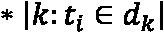
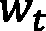

2
介绍矢量表示的基础
向量和向量表示处于神经搜索的核心，因为向量的质量决定了搜索结果的质量。在本章中，你将学习到机器学习 ( ML )中向量的概念。你将看到使用向量表示的常见搜索算法以及它们的优缺点。
我们将在本章中讨论以下主要话题:
- 在ML中引入向量
- 测量两个向量之间的相似性
- 本地和分布式表示
到本章结束时，你将对如何用向量表示每种类型的数据以及为什么这个概念是神经搜索的核心有一个坚实的理解。
技术要求
本章有以下技术要求:
- 最低内存为4gb(8gb或更大)的笔记本电脑
- Python与3.7、3.8或3.9版一起安装在类似Unix的操作系统上，如macOS或Ubuntu
在ML中引入载体
文字是记录人类知识的重要手段。截至2021年6月，Google、Bing等主流搜索引擎索引的网页数量已达24亿，绝大部分信息以文本形式存储。如何存储这些文本信息，甚至如何高效地从知识库中检索所需信息，已经成为信息检索中的一个主要问题。解决这些问题的第一步在于用计算机可以理解的格式来表示文本。
随着基于网络的信息变得日益多样化，除了文本之外，网页还包含大量的多媒体信息，例如图片、音乐和视频文件。这些文件在形式和内容上比文本更加多样化，从不同的角度满足用户的需求。如何表示和检索这些类型的信息，以及如何从互联网上的海量数据中找到用户需要的多模态信息，也是设计搜索引擎时需要考虑的一个重要因素。为了实现这一点，我们需要将每个文档表示为它的向量表示。
一个矢量是一个物体，它既有大小又有方向，你可能记得在学校学过。如果我们可以用向量来表示我们的数据，那么我们就可以用角度来衡量两条信息的相似性。更具体地说，我们可以这样说:
- 两条信息被表示为矢量
- 两个向量都从原点[ 0，0 ]开始(假设二维)
- 两个矢量形成一个角
图2.1–矢量表示的一个例子
vec1 和 vec2 方向相同但长度不同。 vec2 和 vec3 长度相同但指向相反方向。如果角度为0度，则两个向量相同。如果矢量是180度，两个矢量完全相反。我们可以通过角度来衡量两个向量之间的相似性:角度越小，向量越接近。这种方法也叫余弦相似度。
实际上，余弦相似性是最常用的相似性度量之一，用于确定两个向量之间的相似性，但不是唯一的。在测量两个向量之间的相似性一节中，我们将更详细地探讨它以及其他相似性度量。在此之前，您可能想知道如何将原始信息(如文本或音频)编码成数值向量。在本节中，我们将这样做。
我们将使用 Python 和 NumPy库深入研究余弦相似性的细节。除此之外，我们将介绍其他相似性度量，并在接下来的小节中简要介绍本地和分布式向量表示。
用向量来表示数据
首先，让我们定义一个特征向量的概念。假设我们想为维基百科(英文)建立一个搜索系统。截至2022年7月，英文维基百科拥有超过650万篇文章，包含超过40亿个单词(18万个独特的单词)。我们可以把这些独特的词汇称为维基百科的词汇。
这个维基百科集合中的每一篇文章都应该被编码成一系列数值；这被称为特征向量。为此，我们可以将650万篇文章编码成650万个索引的特征向量，然后使用一个相似性度量，例如余弦相似性，来度量编码的查询特征向量和索引的650万个特征向量之间的相似性。
编码过程包括找到一个最佳函数，将原始数据转换为其矢量表示。如何才能实现这个目标？
同样，我们从最简单的方法开始:使用一个位向量。位向量意味着向量中的所有值将是0或1，这取决于单词的出现。假设我们循环遍历词汇表中的所有独特单词；如果这个单词出现在这个特定的文档中， d ，那么我们将这个唯一单词的位置值设置为1，否则为0。
再来刷新一下我们在 第一章 、中介绍的用于神经搜索的神经网络，在中传统的搜索系统是如何工作的？部分，假设我们有两个文档:
doc1= 纪娜是一个神经搜索框架doc2= 纪娜是用被称为深度学习的尖端技术建造的
- 如果我们合并这两个文档，我们就有一个词汇表(独特的单词)，如下:
vocab = 'Jina is a neural search framework built with cutting age technology called deep learning'
- 想象前面的变量，
vocab，是我们的词汇，经过预处理(分词和词干化)，我们得到一个记号列表，如下:vocab = ['a', 'age', 'built', 'call', 'cut', 'deep', 'framework', 'is', 'jina', 'learn', 'neural', 'search', 'technolog', 'with']
请注意，前面提到的词汇已经按字母顺序进行了排序。
- 为了将
doc1编码成向量表示，我们循环遍历doc1中的所有单词，并创建位向量:import nltk doc1 = 'Jina is a neural search framework' doc2 = 'Jina is built with cutting age technology called deep learning' def tokenize_and_stem(doc1, doc2): tokens = nltk.word_tokenize(doc1 + doc2) stemmer = nltk.stem.porter.PorterStemmer() stemmed_tokens = [stemmer.stem(token) for token in tokens] return sorted(stemmed_tokens) def encode(vocab, doc): encoded = [0] * len(vocab) for idx, token in enumerate(vocab): if token in doc: encoded[idx] = 1 # token present in doc return encoded if __name__ == '__main__': tokens = tokenize_and_stem(doc1, doc2) encoded_doc1 = encode(vocab=tokens, doc=doc1) print(encoded_doc1)
前置码块将doc1编码成一个位向量。在encode函数中，我们首先创建了一个填充了0的Python列表；列表的长度与词汇的大小相同。然后，我们遍历词汇表，检查要编码的单词在文档中的出现情况。如果存在，我们将编码向量的值设置为1。最后，我们得到了这个:
>>> [1, 0, 0, 0, 0, 0, 0, 1, 1, 0, 0, 1, 1, 0, 0]
这样，我们就成功地将文档编码成了它的位向量表示。
重要说明
您可能已经注意到，在前面的例子中，位向量的输出包含许多0值。在现实世界中，随着词汇表变得越来越大，向量的维数也变得非常高，编码文档中的大部分维数很有可能被0填充，这对于存储和检索来说效率极低。这也被称为稀疏向量。一些Python库，比如SciPy，有很强的稀疏向量支持。一些深度学习库，如TensorFlow和PyTorch，内置了稀疏张量支持。同时，纪娜原始数据类型支持SciPy、TensorFlow和PyTorch稀疏表示。
到目前为止，我们已经知道了矢量是一个既有大小又有方向的物体。我们还设法使用一个位向量创建了两个文本文档的最简单的向量表示形式。现在，知道这两个文档有多相似将是非常有趣的。让我们在下一节中了解更多这方面的内容。
测量两个向量之间的相似性
测量两个向量之间的相似性在神经搜索系统中很重要。一旦所有的文档都被索引到它们的向量表示中，给定一个用户查询，我们对该查询执行相同的编码过程。最后，我们将编码的查询向量与所有编码的文档向量进行比较，找出最相似的文档。
我们可以继续上一节的例子，尝试测量doc1和doc2之间的相似性。首先，我们需要运行脚本两次来编码doc1和doc2:
doc1 = 'Jina is a neural search framework' doc2 = 'Jina is built with cutting age technology called deep learning'
然后，我们可以为它们生成一个矢量表示:
encoded_doc1 = [1, 0, 0, 0, 0, 0, 0, 1, 1, 0, 0, 1, 1, 0, 0] encoded_doc2 = [1, 1, 1, 1, 1, 1, 0, 1, 1, 0, 1, 0, 0, 1, 1]
由于编码结果的维数总是等于词汇的大小，问题就转化为如何度量两个向量表示:encoded_doc1和encoded_doc2之间的相似性。
重要说明
前面提到的矢量表示encoded_doc1和encoded_doc2的深度为15。我们很容易将1D数据可视化为一个点，将2D数据可视化为一条线，或者是3D数据，但对于高维数据却不是这样。实际上，我们可能会执行降维，将高维向量降维为3D或2D，以便绘制它们。最常见的技术是被称为t-sne的T17。
成像可以在2D向量空间中绘制两个编码向量表示。我们可以将encoded_doc1和encoded_doc2形象化如下:
图2.2–余弦相似度
然后，我们可以用测量encoded_doc1和encoded_doc2之间的相似度，具体来说，就是余弦相似度。余弦定律告诉我们:
假设 p 表示为【x1，y1】q表示为【x2，y2】；那么，前述公式可以改写为:

根据公式，我们可以计算出encoded_doc1和encoded_doc2之间的余弦相似度，如下所示:
import math
def compute_cosine_sim(encoded_doc1, encoded_doc2):
numerator = sum([i * j for i, j in zip(encoded_doc1,
encoded_doc2)])
denominator_1 = math.sqrt(sum([i * i for i in
encoded_doc1]))
denominator_2 = math.sqrt(sum([i * i for i in
encoded_doc2]))
return numerator/(denominator_1 * denominator_2)
如果我们打印出encoded_doc1和encoded_doc2之间相似性的结果，我们得到如下结果:
>>> 0.40451991747794525
这里我们得到两个编码矢量之间的余弦相似度，大致等于 0.405 。在搜索系统中，当用户提交一个查询时，我们将把查询编码成它的向量表示。我们已经将所有的文档(我们想要搜索的)单独离线编码成它们的向量表示。这样，我们可以计算查询向量相对于所有文档向量的相似性得分，以产生最终的排序列表。
重要说明
前面的代码说明了如何计算余弦相似度。代码没有优化。实际上，您应该始终使用NumPy对向量(NumPy数组)执行矢量化运算，以获得更高的性能。
超越余弦相似度的度量
余弦相似性是最常用的相似性/距离度量，还有一些其他常用的度量。本节我们将介绍另外两个常用的距离函数，即欧几里德距离和曼哈顿距离。
重要说明
相似性度量测量两个文档有多相似。另一方面，距离度量测量两个文档之间的不同之处。在搜索场景中，您总是希望获得与查询匹配的前k个匹配项。因此，如果您使用相似性度量，总是从排序列表中获取前k个项目。另一方面，在使用距离度量时，总是从排序列表中获得最后k个项目，或者反转排序列表并获得前k个项目。
与余弦相似性不同，余弦相似性以两个向量的角度作为其相似性度量，欧几里德距离以两个数据点之间的线段的长度作为度量。例如，考虑下图中的两个2D文档:
图2.3–欧几里德距离
在图2.3 中可以看到，之前，我们使用vec1和vec2之间的角度来计算它们的余弦相似度。对于欧几里德距离，我们以不同的方式计算。vec1和vec2分别具有起点0和终点p和q。现在，这两个向量之间的距离变成:
另一个距离度量在(p1，p2)处被称为p，在(q1，q2)处被称为q，这两个向量之间的距离变为:
从图2.4 中可以看出，超平面已经被分割成小块。每个块的宽度为1，高度为1。p和q之间的距离变为4:
图2.4–曼哈顿距离
还有许多其他距离度量，例如汉明距离和角距离，但是我们不会一一介绍，因为余弦和欧几里德是最常用的相似性度量。这又引出了一个有趣的问题:我应该使用哪种距离/相似性度量来使向量相似性计算更有效？答案是看情况。
首先，这取决于你的任务和你的数据。但是，一般来说，当执行文本检索和相关任务时，余弦相似度将是您的首选。它已经被广泛用于诸如测量两段编码文本文档之间的相似性的应用。
深度学习模型也可能影响你的相似性/距离度量选择。例如，如果您应用度量学习技术来微调您的ML模型以优化某些相似性度量，那么您可能会坚持使用您优化的相同的相似性度量。更具体地说，请注意以下几点:
- 您可以应用连体神经网络基于欧几里德距离优化输入对(查询和文档),并获得新的模型
- 使用模型提取特征时，最好使用欧氏距离作为相似性度量
- 如果你的向量有非常高的维数，从欧几里德距离切换到曼哈顿距离可能是一个好主意，因为它提供了更健壮的结果
重要说明
在应用中，不同的人工神经网络库可能使用不同的距离度量作为默认配置。例如，Annoy鼓励用户使用角度距离来计算矢量距离。它是欧几里得距离的一种变体。更多关于安的介绍将在 第三章系统设计和工程挑战中介绍。
有多种方法可以将数据编码成矢量表示。一般来说，这可以分为两种形式:本地表示和分布式表示。前述将数据编码成矢量表示的方式可以被分类为局部表示，因为它将每个唯一的字视为一维。
在下一节中，我们将介绍最重要的本地表示和分布式表示算法。
本地和分布式表示
在本节中，我们将深入探讨本地表示和分布式表示。我们将研究两种不同表示的特征，并列出最广泛使用的局部和全局表示，以对不同形式的数据进行编码。
局部向量表示法
作为文本表示的经典方法，局部表示只是在将某个单词表示为向量时，让使用向量中的不连续维度。不连续的维度意味着向量的每个维度代表一个单独的标记。
当仅使用一维时，称为的一键表示。 One-hot 表示将单词表示为长向量，向量的维数就是要表示的单词总数。大多数维度为0，而只有一个维度的值为1。不使用维数为1的不同单词。如果这种表示方法是稀疏存储的，即基于1的维度给每个单词分配一个数字ID，那就简洁了。
One-hot还意味着在假设所有单词相互独立的情况下，不需要额外的学习过程。这保持了表示单词的向量之间的正交性，因此具有很强的辨别能力。利用最大熵、支持向量机、条件随机场和其他ML算法，一键表示在多个方面有很大的影响，例如文本分类、文本聚类和词性标注。对于以关键词匹配为主的ad hoc检索应用场景，基于一热表示的词袋模型仍然是主流选择。
然而，一键表示法忽略了单词之间的语义关系。此外，当表示包含 N 个单词的词汇 V 时，一键表示需要构造一个维度为 N 的向量。这就导致了参数爆炸和数据稀疏的问题。
另一种类型的本地表示被称为作为字袋，或位向量表示，我们在本章前面已经介绍过。
作为一种向量表示方法，词袋模型将文本视为词的集合，只记录词是否出现在文本中，而忽略了文本中的词序和语法。基于单词的一键表示，单词包将文本表示为由0和1组成的向量，并为位操作提供了强大的支持。该方法可以在检索场景中进行常规的查询处理。因为它也保持了单词之间的正交性，所以对于文本分类之类的任务，它仍然工作得很好。现在，我们将使用名为 scikit-learn 的 Python ML框架构建一个位向量表示:
from sklearn.feature_extraction.text import CountVectorizer
corpus = [
'Jina is a neural search framework for neural search',
'Jina is built with cutting edge technology called deep
learning',
]
vectorizer = CountVectorizer(binary=True)
X = vectorizer.fit_transform(corpus)
print(X.toarray())
输出如下所示:
>>> array([[0, 0, 0, 0, 0, 1, 1, 1, 1, 0, 1, 1, 0, 0],
[1, 1, 1, 1, 1, 0, 0, 1, 1, 1, 0, 0, 1, 1]])
基于词袋(位向量)模型，词袋表示算法考虑了词在文本主体中出现的频率。因此，不同词对应的词袋编码特征值不再是0或1，而是这类词出现在正文中的频率。一般来说，一个词在文本中出现的频率越高，这个词对文本的重要性就越大。要获得这个表示，只需将binary=False放入前面的实现中:
from sklearn.feature_extraction.text import CountVectorizer
corpus = [
'Jina is a neural search framework for neural search',
'Jina is built with cutting edge technology called deep
learning',
]
vectorizer = CountVectorizer(binary=False)
X = vectorizer.fit_transform(corpus)
print(X.toarray())
正如您可以从下面的输出中发现的，术语频率已经被考虑在内了。例如，由于neural标记出现了两次，编码结果的值增加了1:
>>> array([[0, 0, 0, 0, 0, 1, 1, 1, 1, 0, 2, 2, 0, 0],
[1, 1, 1, 1, 1, 0, 0, 1, 1, 1, 0, 0, 1, 1]])
最后但同样重要的是，我们有一个最常用的本地表示，称为术语频率-逆文档频率 ( tf-idf ) 表示。
tf-idf是信息检索和数据挖掘的常用表示方法。文本j中单词 i 的TF-IDF值如下:
这里， ni，j 表示单词 i 在文本 j 中出现的频率； |d_j | 表示文中总字数； |D| 表示语料库中的记号数，表示包含单词 i 的文档数。通过考虑单词在文本中出现的频率，TF-IDF算法通过计算单词的IDF来进一步考虑单词在整个文本中的普遍重要性。也就是说，一个单词在文本中出现的频率越高，它在正文的其他部分出现的频率就越低。这表明该单词对当前文本越重要，其权重就越高。该算法的scikit-learn实现如下:
from sklearn.feature_extraction.text import TfidfVectorizer
corpus = [
'Jina is a neural search framework for neural search',
'Jina is built with cutting edge technology called deep
learning',
]
vectorizer = TfidfVectorizer()
X = vectorizer.fit_transform(corpus)
print(X.toarray())
Tf-Idf加权编码结果如下所示:
>>> array([[0., 0., 0., 0., 0., 0.30134034, 0.30134034, 0.21440614, 0.21440614, 0.,0.60268068, 0.60268068, 0., 0. ],
[0.33310232, 0.33310232, 0.33310232, 0.33310232, 0.33310232, 0., 0. , 0.23700504, 0.23700504, 0.33310232, 0., 0., 0.33310232, 0.33310232]])
到目前为止，我们已经介绍了局部矢量表示。在下一节中，我们将深入研究分布式向量表示，为什么我们需要它，以及常用的算法。
分布式矢量表示
虽然文本的局部表示在文本分类和数据召回等任务中具有优势，但它存在数据稀疏的问题。
更具体地说，如果一个语料库有100，000个不同的标记，向量的维数将变成100，000。假设我们有一个包含200个令牌的文档。为了表示这个文档，100，000个向量中只有200个条目是非零的。所有其他维度仍然得到0值，因为词汇表的标记没有出现在文档中。
这给数据存储和检索带来了巨大的挑战。相应地，一个自然的想法是获得文本的低维稠密向量，这被称为文本的分布式表示。
在本节中，首先描述单一模态的分布式表示，例如文本、图像和音频；然后，给出了多模态联合学习的分布式表示方法。我们还将根据数据的模态有选择地介绍几种重要的表示学习算法，即文本、图像、音频和跨模态表示学习。我们先来看看基于文本的算法。
在下表中，我们已经列出了一些用于编码不同数据形态的选定模型:
|
型号 |
模态 |
域 |
应用 |
|
|
文本 |
密集检索 |
文本到文本搜索，问答 |
|
|
图像 |
基于内容的图像检索 |
图像间搜索 |
|
|
图像 |
基于内容的图像检索 |
图像间搜索 |
|
|
听觉的 |
基于内容的音频检索 |
音频到音频搜索 |
|
|
文本和图像 |
跨模态检索 |
文本到图像搜索 |
表1.1–可用作不同输入模式编码器的选定型号
基于文本的算法
因为文本携带重要的信息，所以文本的分布式表示充当搜索引擎的主要功能，并且已经在学术著作和工业中被广泛研究。鉴于我们有大量未标记的文本数据(如维基百科)，当涉及到基于文本的算法时，我们通常在大型语料库上采用无监督的预训练。
基于相似的单词具有相似的上下文的信念，Mikolov等人提出了 word2vec 算法，该算法包括两个简单的神经网络学习模型:连续词袋 ( CBOW )和 skip-gram ( SG )模型。
具体来说，CBOW模型用于使用其周围的单词，例如前面两个单词和后面两个单词，来导出单词的表示。例如，给定维基百科文档中的一个句子，我们随机屏蔽掉这个句子中的一个标记。我们试图通过周围的标记来预测屏蔽的标记:
doc1 = 'Jina is a neural [MASK] framework'
在前面的文档中，我们屏蔽了标记搜索，并试图预测屏蔽标记的向量表示， u ，方法是对周围标记的表示 求和，并在 u 和
求和，并在 u 和 之间进行点积。在训练时，我们将选择一个令牌， y ，以最大化点积:
之间进行点积。在训练时，我们将选择一个令牌， y ，以最大化点积:

重要说明
需要注意的是，在训练之前，我们会随机初始化向量值。
另一方面，SG试图从当前记号预测周围记号的向量表示。CBOW和SG之间的差异在图2.5 中说明:
图2.5–CBOW和SG(来源:向量空间中单词表示的有效估计)
两个模型都用于通过最大化整个语料库上的目标函数的对数似然来学习单词表示。为了减轻softmax 函数在输出层带来的大量计算负担，Mikolov等人创造了两种优化方法，即分层softmax 和负采样。传统的深度神经网络将每个下一个单词预测为一个分类任务。该网络必须有许多输出类作为唯一令牌。例如，在预测英文维基百科中的下一个单词时，类别数超过16万。这是极其低效的。分级softmax和负采样用具有作为叶子的单词的分级层来替换平面softmax层，并且通过对两个记号是真对(语义相似)还是假对(独立记号)进行分类，将多类分类问题转换成二元分类问题。这大大提高了单词嵌入的预测速度。
经过预训练，我们可以给这个word2vec模型一个令牌，得到一个所谓的单词嵌入。这个单词嵌入用一个向量来表示。一些预训练的word2vec向量被表示为300D字向量。维数比我们之前介绍的稀疏向量空间模型小很多。所以，我们也称这些向量为密集向量。
在 word2vec 和 GloVe 等算法中，一个词的表示向量一般在训练后保持不变，可以应用于下游应用，比如命名实体识别。
但是，同一个词在不同语境下的语义可能会有所不同，甚至有明显不同的含义。2019年，谷歌宣布了来自Transformers(BERT)的双向编码器表示，这是一种基于transformer的自然语言处理神经网络。BERT使用变换器网络来表示文本，并通过屏蔽语言模型获得文本的上下文信息。此外，BERT还采用下一句预测 ( NSP )来加强关系的文本表示，并在许多文本表示任务中取得了良好的效果。
与word2vec类似，BERT已经在Wikipedia数据集和其他一些数据集(如BookCorpus)上进行了预训练。它们形成了超过30亿个标记的词汇。BERT还接受了不同语言的培训，如英语和德语，以及多语言数据集。
通过预训练和微调范例，可以在没有任何注释的情况下在大量语料库上训练BERT。预测时，将待预测文本再次放入训练好的网络中，得到包含上下文信息的动态向量表示。训练时，BERT按照一定的比例替换原文中的单词，并使用训练模型进行正确的预测。BERT还会添加一些特殊字符，比如[CLS]和[SEP]，帮助模型正确判断两个输入的句子是否连续。同样，我们有doc1和doc2，如下所示；doc2是doc1的下一句话:
doc1= 纪娜是个神经搜索框架doc2= 纪娜是用被称为深度学习的尖端技术建造的
在预训练期间，我们将两个文档视为两个句子，并将文档表示如下:
doc = '[CLS] Jina is a neural [MASK] framework [SEP] Jina is built with cutting edge technology called deep learning'.
输入文本后，BERT的输入由三类向量组成，即[MASK] token。根据BERT论文的作者( BERT:用于语言理解的深度双向转换器的预训练)，大约15%的标记被屏蔽掉(Jacob等人)。
图。2.6–BERT输入表示。每个输入嵌入是三个嵌入的总和
在预训练时，由于我们使用NSP作为训练目标，大约50%的第二句是“真实的”下一句，而另外50%的句子是从语料库中随机选择的，这意味着它们不是第一句的后续句子。这有助于我们提供正对和负对来改进模型预训练。BERT的目标函数是正确地预测被屏蔽的标记以及下一个句子是否是正确的。
如前所述，在预训练BERT之后，我们可以针对特定任务对模型进行微调。BERT论文的作者对不同下游任务(如问答和语言理解)的预训练模型进行了微调，并在11个下游数据集上实现了最先进的性能。
基于视觉的算法
随着互联网的快速发展，互联网上的信息载体日益多样化，图像提供了多种多样的视觉特征。许多研究人员期望将图像编码为表示的向量。影像分析最广泛使用的模型架构叫做卷积神经网络 ( CNN )。
CNN接收形状(Height、Width、Num_Channels)的图像作为输入(通常是三通道RGB图像或一通道灰度图像)。图像将通过多个卷积层之一。这需要一个内核(或过滤器)并遍历输入，图像就变成了一个抽象的激活图。
在多个卷积操作之一之后，激活映射的输出将通过一个池层发送。池层采用特征图中的一小簇神经元，并在该簇中应用最大值或平均值运算。这被称为最大汇集和平均汇集。汇集层可以显著降低要素地图的维度，使其呈现更加紧凑。
通常，多个卷积层之一和一个汇集层的组合被称为卷积块。例如，三个卷积层加上一个池层构成一个卷积块。在卷积块的末尾，我们通常应用展平操作来获得图像数据的矢量表示。
在下面的截图中，我们展示了一个设计精美的CNN模型，名为VGG16。可以看出，它由五个卷积块组成，每个卷积块包含两到三个卷积层和一个最大池层。在这些块的末尾，激活图被展平成一个 s特征向量:
图。2.7–vgg 16由五个卷积块组成，使用softmax分类头生成分类结果
值得一提的是，VGG16 是为ImageNet分类设计的。因此，在激活图被展平为特征向量后，它被连接到两个完全连接的层(密集层)和一个softmax分类头。
在实践中，我们将移除softmax分类头，以将该分类模型变成嵌入模型。给定一个输入图像，这个嵌入模型产生一个扁平的特征图，而不是图像中对象的分类类别。此外，与相比，ResNet是一个更复杂但常用的视觉特征提取器。
除了文本和图像，音频搜索是一个重要的搜索应用程序，例如，从短片中识别音乐或搜索类似风格的音乐。在下一节中，我们将列出该方向的几个深度学习模型。
基于声学的算法
给定一系列声学输入，深度学习驱动的算法对声学领域有着巨大的影响。例如，它们已经被广泛用于文本到语音的任务。给定一段音乐作为查询，寻找相似(或相同)的音乐通常用于音乐应用。
在音频数据上训练的最新最先进的算法之一叫做 wave2vec 2.0 。与BERT类似，wave2vec以无人监督的方式进行训练。在预训练期间，取一段音频数据，wave2vec屏蔽掉部分音频输入，并试图了解被屏蔽掉的内容。
wave2vec和BERT之间的主要区别在于，音频是一种连续信号，没有清晰的令牌分段。Wave2vec将每个25 ms长的音频视为一个基本单元，并将每个25 ms基本单元馈送到CNN模型中，以学习单元级别的特征表示。然后，部分输入被屏蔽，并馈入类似BERT的变压器模型，以预测屏蔽输出。训练目标是最小化原始音频和预测音频之间的对比损失。
值得一提的是，对比(自我监督)预训练也广泛用于文本或图像的表征学习。例如，给定一个图像作为输入，我们可以稍微增加图像内容以产生同一图像的两个视图:尽管这两个视图看起来不同，但我们知道它们来自同一图像。
这种自我监督的对比学习已经广泛用于表示学习:在给定任何类型的输入的情况下，学习一个好的特征向量。在将模型应用于特定领域时，仍然建议给出一些带标签的数据，用一些额外的标签对模型进行微调。
超越文本、视觉和听觉的算法
在现实生活中，存在多种信息载体。除了文字、图像、语音，视频、动作，甚至蛋白质都包含了丰富的信息。因此，已经进行了许多尝试来获得矢量表示。DeepMind的研究人员开发了alpha fold和 AlphaFold2 算法。基于传统特征，例如氨基酸序列的特征，AlphaFold算法可以用于获得蛋白质表达载体并计算其空间三维结构，这大大提高了蛋白质分析领域的实验效率。
而且在2021年，GitHub推出了Copilot 来帮助程序员自动完成代码。在此之前，OpenAI 开发了 Codex 模型，能够将自然语言转换成代码。基于Codex的模型架构，GitHub利用他们开源的TB级代码库，大规模训练模型，完成Copilot模型，帮助程序员编写新代码。Copilot还支持多种编程语言的生成和完成，如Python、JavaScript、Go等。在搜索领域，如果我们想要执行代码搜索或评估两段代码的相似性，可以使用Codex模型将源代码编码成向量表示。
上述操作主要集中在文本、图像或音频的单独编码上，因此编码的向量空间可能有很大不同。为了将不同模态的信息映射到同一个向量空间，OpenAI研究人员提出了CLIP模型，它可以有效地将图像映射到文本。具体来说，CLIP包括图像编码器和文本编码器。在输入一幅图像和多段文字后，CLIP同时对它们进行编码，并希望找到最适合每幅图像的文字。通过在大规模数据集上训练CLIP，CLIP可以获得图像和文本的良好表示，并将它们映射到相同的向量空间中。
总结
本章介绍了向量表示法，这是搜索引擎操作的一个主要步骤。
首先，我们介绍了向量表示的重要性以及如何使用它，然后介绍了本地和分布式向量表示算法。在分布式矢量表示方面，涵盖了文本、图像和音频的常用表示算法，并总结了其他模态和多模态的常用表示方法。因此，我们发现，与稀疏向量相比，密集向量表示方法通常需要相对丰富的上下文信息。
在构建可扩展的神经搜索系统时，创建一个能够将原始文档编码成高质量嵌入的编码器是很重要的。这个编码过程需要快速执行，以减少索引时间。在搜索时，应用相同的编码过程并在合理的时间内找到排名靠前的文档至关重要。在下一章中，我们将利用本章中的思想，构建一个关于如何创建一个可扩展的神经搜索系统的思维导图。
延伸阅读
- 伯特:用于语言理解的深度双向转换器的预训练。 arXiv预印本arXiv:1810.04805 (2018)。
- 西蒙扬，凯伦和安德鲁·齐泽曼。“用于大规模图像识别的非常深的卷积网络。” arXiv预印本arXiv:1409.1556 (2014)。
- 何，等，“深度残差学习在图像识别中的应用”IEEE计算机视觉和模式识别会议论文集。2016.
- 《wav2vec:语音辨识的无监督预训练》 arXiv预印本arXiv:1904.05862 (2019)。
- 《从自然语言监督中学习可转移的视觉模型》机器学习国际会议。PMLR，2021年。